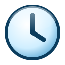
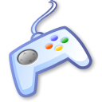
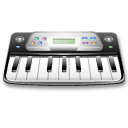
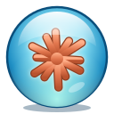

Classic
Offline
64%
Now playing
‹
›
Paused
Nothing playingPick a mix in Music, or press Space.
Press any button
Marina

✕＋
Send
Open windows
▭ Page view⧉ Pop out✕
NotificationsClear all
Quiet hours at night
Switch to stock Windows?
The normal taskbar and desktop come back. Your apps and games stay open.
Come back any time with CtrlAltWinS
ASwitchEnterBNot nowEsc
Welcome to Tidepool
Your desktop follows the real sun over a new place each day.
- ↑↓Pick a category, ←→an item, EnterAopen it.
- Click the fishbowl, or press F2Y, to talk to Marina: questions, tasks, colours, scenes, skins.
- Ctrl+Alt+Win+Salways takes you back to stock Windows.
AStartEnter
States · F1
Concept-only menu. Every state is also reachable with the keys in the legend. Time preview lives here because letters start a search.
Skyrim (modded)is running full screen.
Tidepool is hidden and paused: no drawing, no timers, no polling.
HomeG opens the guide · Esc ends this preview
Tidepool is hidden and paused: no drawing, no timers, no polling.
HomeG opens the guide · Esc ends this preview
Now playing
Waiting for you
This PC

Steam
FL StudioTidepool is restingPress Ctrl+Alt+Win+S, or open “Tidepool” in Start, to come back. (Concept: Esc or click here.)
Type here to search
